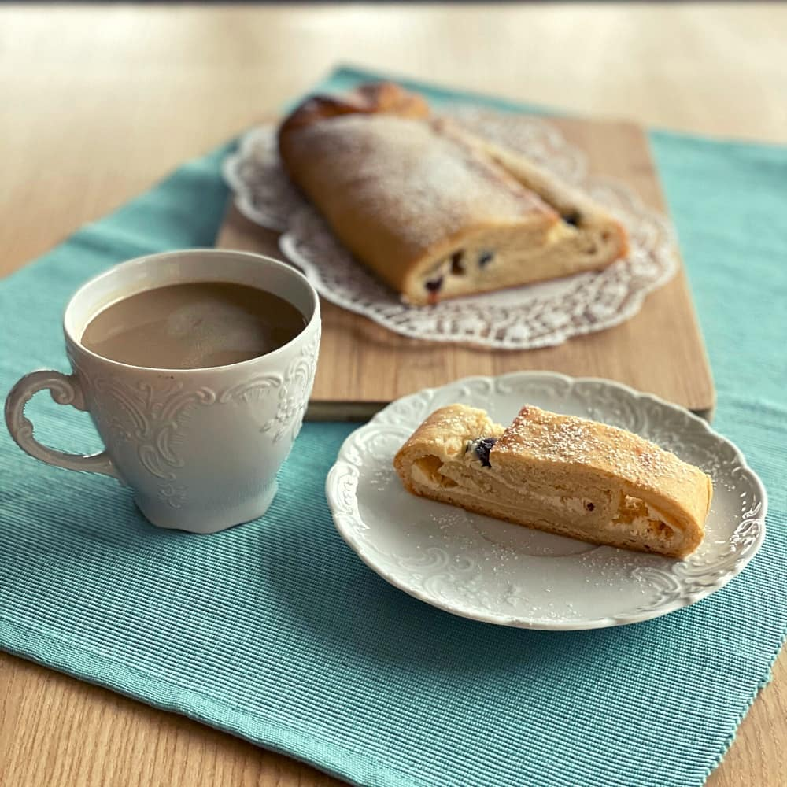

Tvarohový závin podľa @vassladkydomov — Normy Jedál
Máme pro vás ještě jeden recept na závin. Tentokrát na Tvarohový závin s brusinkami.
RECEPT:
Budeme potřebovat:
nízký plech + papír na pečení
Na těsto:
250 ml mléka
2 žloutky
100 g rozpuštěné Stelly Originál s máslovou příchutí (nebo cukrářské)
2 lžíce rumu
špetka soli
50 g cukru
250 g polohrubé mouky
250 g hladké mouky
20 g čerstvého nebo 2 lžičky sušeného droždí
Na náplň:
500 g měkkého tvarohu
1 žloutek
hrst brusinek
2 lžíce smetany
1-3 lžíce moučkového cukru (podle toho, jak máte rádi sladké)
1 lžíce rumu
Postup přípravy:
1. Droždí rozdrobíme ve vlažném mléce a přimícháme lžičku cukru.
2. V míse si odvážíme mouky, přidáme žloutky, Stellu, rum, cukr a špetku soli. Na závěr nalijeme mléko, ve kterém už nám vzešel kvásek.
3. Vše dobře promícháme - ideálně robotem za pomoci hnětacích metel. Dáme stranou přikryté utěrkou na teplé místo, aby těsto mohlo pomalu kynout.
4. Připravíme si náplň. Smícháme tvaroh se smetanou - můžeme přidat více či naopak ubrat. Záleží, zda použijete tvaroh v kostce či vaničku. Přidáme rum, cukr, žloutek a vše dobře promícháme.
5. Troubu rozehřejeme na 180 °C.
6. Vykynuté těsto rozdělíme na poloviny. Každou část rozválíme na obdélník. Namažeme tvarohovou náplní a zavineme do závinu.
7. Opatrně přeneseme na plech vyložený papírem na pečení a necháme ještě 15-20 minut kynout. Pak můžeme pomazat rozšlehaným vejcem nebo nechat bez pomazání.
8. Pečeme cca 20 minut do zlatova.
#stella #stellapeceni #peceni #vassladkydomov #stellaoriginal #stellacukrarska #pecudoma #pecuproradost #pecuprotebe
#jakoodmaminky #jakoodbabicky #recept #overenyrecept #vyzkousenyrecept #zavin #tvarohovyzavin #tvarohovyzavinsbrusinkami